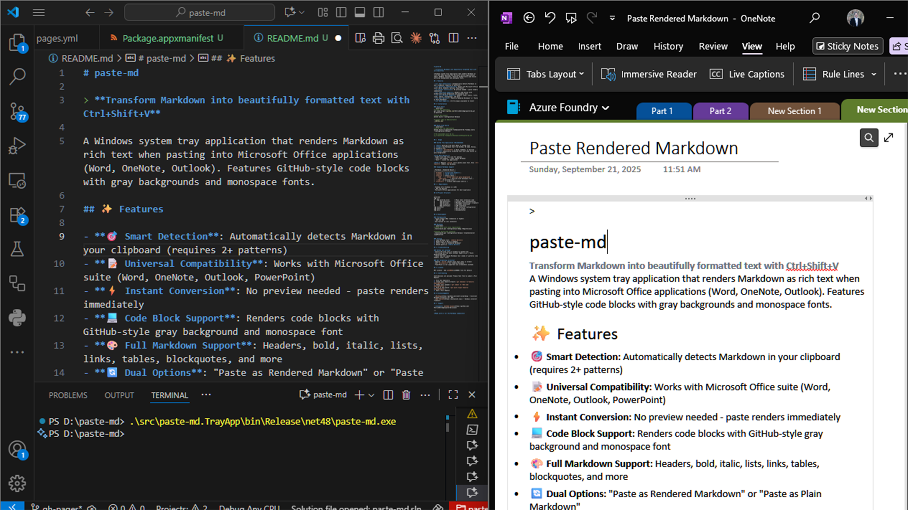

üéØ Project Overview
paste-md is a Windows system tray application that instantly converts Markdown text into beautifully formatted rich text for Microsoft Office applications. Simply copy any Markdown and press Ctrl+Shift+V to paste with full formatting—including GitHub-style code blocks with gray backgrounds.
Paste-MD seamlessly converts Markdown from VS Code into beautifully formatted documents in OneNote
Copy:
**Hello World!** Here's some `code` with syntax highlighting.Press Ctrl+Shift+V → Pastes as: Hello World! Here's some
code with syntax highlighting.
✨ Key Features
Automatically detects Markdown in clipboard (requires 2+ patterns)
No preview needed—paste renders immediately
GitHub-style gray backgrounds with monospace fonts
Works with Word, OneNote, Outlook, and PowerPoint
Headers, bold, italic, lists, links, tables, blockquotes
Ctrl+Z always available to revert changes
üöÄ How It Works
- System Tray App runs silently in background
- Global Hotkey
Ctrl+Shift+Vtriggers smart paste - Smart Detection identifies Markdown patterns in clipboard
- Code Blocks render with gray background (#f6f8fa) and Consolas font
- Preserves Original - Regular Ctrl+V still works normally
System tray icon provides quick access to paste options and application controls
Confirmed Working:
- ✅ Microsoft Word - Full RTF support
- ✅ OneNote - HTML formatting
- ✅ Outlook - Email composition
- ❌ PowerPoint - Not supported (use screenshots)
üì¶ Installation & Usage
Quick Install
cd paste-md
dotnet build --configuration Release
.\INSTALL.bat # Run as Administrator
Usage
- Start paste-md (tray icon appears)
- Copy any Markdown text from GitHub, VS Code, etc.
- Press
Ctrl+Shift+Vin Word/OneNote/Outlook - Done! Formatted text with proper code block styling
üõ†Ô∏è Technical Details
- Platform: Windows 10/11 (x64)
- Framework: .NET Framework 4.8 for COM compatibility
- Dependencies: .NET 6.0 Runtime
- Architecture: System tray application with global hotkeys
- Markdown Engine: Markdig
Project Structure
├── src/
│ ├── paste-md.Core/ # Core Markdown processing
│ └── paste-md.TrayApp/ # System tray application
├── INSTALL.bat # Quick installer
├── UNINSTALL.bat # Clean uninstaller
└── README.md # Documentation
üéÆ Demo & Examples
üìπ Video Demonstration
Watch paste-md in action converting complex Markdown documents
üìä Real-World Example: Markdown Tables
One of paste-md's most powerful features is converting Markdown tables into perfectly formatted Office tables:
.png)
Before: Raw Markdown table in VS Code
.png)
After: Beautifully formatted table in OneNote
paste-md preserves:
- Table structure and alignment
- Links (like the Markdig reference)
- Code formatting within cells
- Priority indicators and styling
üì∏ Conversion Example
Side-by-side view: Raw Markdown in VS Code (left) instantly converts to beautifully formatted content in OneNote (right) with Ctrl+Shift+V
üîó Resources & Links
- GitHub Repository: github.com/PatrickRutledge/paste-md
- Documentation: Complete README
- Store Submission Guide: Available in project documentation
- Issues & Support: GitHub Issues
üéØ Use Cases
- Converting GitHub README content for presentations
- Pasting documentation into Word documents
- Formatting technical notes in OneNote
- Sharing code snippets via Outlook with proper styling
- Creating professional reports from Markdown drafts
üîß Troubleshooting
Hotkey not working?
- Ensure tray icon is visible in system tray
- Try right-click menu → "Paste Rendered Markdown"
- Verify Markdown text has 2+ patterns (headers, bold, lists)
No formatting?
- Regular
Ctrl+Vpastes plain text (this is normal) - Use
Ctrl+Shift+Vfor rendered Markdown - Test with samples from project documentation